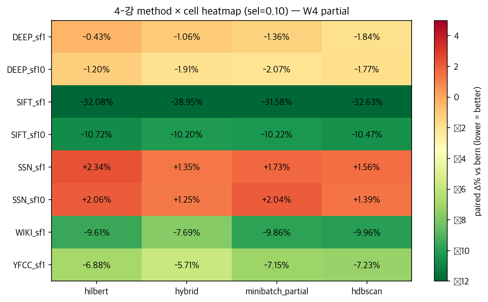
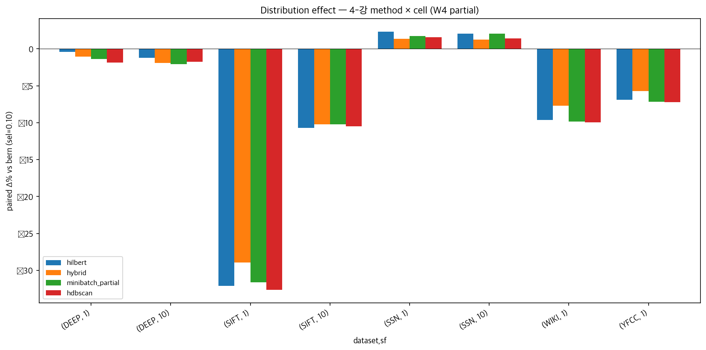

W4 Sprint 결과 종합 — 4강 method (Hilbert / Hybrid / MiniBatch_partial / HDBSCAN) 의
5 dataset × 2 scale 일반화 검증, 분포 sweet spot 정리, 자문 메일 합의
ECQO — 인덱스가 있을 때 HNSW range query 로 정확한 카디널리티를 1~2 ms 안에 추정. multi-table query plan 까지 직접 다룸.
Adaptive Sampling — 인덱스 없는 단일 테이블 영역에서 momentum 기반 동적 sample size 조정으로 1.2~3.2× speedup. 그러나 분포 인지 sampling 의 가치는 미분석.
Adaptive Sampling 의 전 단계인 "어떻게 sample 을 분배할 것인가" 의 가치를 정량화.
| Dataset | dim | sf1 (800K) | sf10 (8M) | 비고 |
|---|---|---|---|---|
| DEEP | 96 | ▣ | ▣ | normal · 균형 |
| SIFT | 128 | ▣ | ▣ | cluster ratio 9.41 — imbalanced |
| SSN++ | 256 | ▣ | ▣ | balanced (ratio 1.29) |
| WIKI | 768 | ▣ | — | high-dim text |
| YFCC | 192 | ▣ | — | PCA from 1280d |
| YFCC_DL | 192 | ▣ | ▣ | 분포 정합성 비교용 |
partsupp_<DS>_<sf> 일관 패턴.
| Dataset | sf1 ρ | sf10 ρ | 부호 일관 |
|---|---|---|---|
| DEEP | −0.680 | −0.621 | consistent |
| SIFT | −0.74 | −0.66 | consistent |
| SSN++ | [TBD] | [TBD] | measuring |
| WIKI | [TBD] | — | measuring |
| YFCC | [TBD] | [TBD] | measuring |
| Cell | Hilbert | Hybrid | MB_partial | HDBSCAN |
|---|---|---|---|---|
| DEEP_sf1 | −0.43 | −1.06 | −1.36 | −1.84 |
| DEEP_sf10 | −1.20 | −1.91 | −2.07 | −1.77 |
| SIFT_sf1 | −32.08 | −28.95 | −31.58 | −32.63 |
| SIFT_sf10 | −10.72 | −10.20 | −10.22 | −10.47 |
| SSN_sf1 | +2.34 | +1.35 | +1.73 | +1.56 |
| SSN_sf10 | +2.06 | +1.25 | +2.04 | +1.39 |
| WIKI_sf1 | −9.61 | −7.69 | −9.86 | −9.96 |
| YFCC_sf1 | −6.88 | −5.71 | −7.15 | −7.23 |
σ_i 신호 anti-direction 좁은 sel=0.01 측정.
| Dataset | Δ% vs Prop. |
|---|---|
| DEEP_sf10 | +5.21% |
| SIFT_sf10 | +9.49% |
| SSN/WIKI/YFCC | [TBD] |
| Method | 학습 | Det. | Online |
|---|---|---|---|
| Hilbert | learning-free | ✓ | ✓ |
| Hybrid | ~2 min | ✓ | partial |
| MB_partial | < 1 min | ✓ | ✓ |
| HDBSCAN | ~5 min | ✓ | — |
| Cell | Hilbert | Hybrid | MB_partial | HDBSCAN |
|---|---|---|---|---|
| DEEP_sf1 | −0.43 | −1.06 | −1.36 | −1.84 |
| DEEP_sf10 | −1.20 | −1.91 | −2.07 | −1.77 |
| SIFT_sf1 | −32.08 | −28.95 | −31.58 | −32.63 |
| SIFT_sf10 | −10.72 | −10.20 | −10.22 | −10.47 |
| SSN_sf1 | +2.34 | +1.35 | +1.73 | +1.56 |
| SSN_sf10 | +2.06 | +1.25 | +2.04 | +1.39 |
| WIKI_sf1 | −9.61 | −7.69 | −9.86 | −9.96 |
| YFCC_sf1 | −6.88 | −5.71 | −7.15 | −7.23 |
| Dataset | sf1 → sf10 |
|---|---|
| DEEP | consistent (−) |
| SIFT | consistent (−) |
| SSN++ | consistent (+) hurt |

| Dataset | ratio | 효과 |
|---|---|---|
| SIFT | 9.41 | LARGE |
| WIKI 768d | [high] | LARGE |
| YFCC 192d | [mid] | MEDIUM |
| DEEP | ~2 | small |
| SSN++ | 1.29 | HURT |

| Cell | KM20 | Hilbert | MB_p | Hybrid | HDBSCAN |
|---|---|---|---|---|---|
| deep_sift_10 | [TBD] | [TBD] | [TBD] | [TBD] | [TBD] |
| deep_wiki_10 | [TBD] | [TBD] | [TBD] | [TBD] | [TBD] |
partsupp_deep_10 ⨝ part_wiki_10 · TPC-H natural foreign key (ps_partkey = p_partkey). 두 dataset 의 다른 dim (96 vs 768) 환경에서 4강 method 일반화.
| Method | recovery rate |
|---|---|
| KM20 | [TBD] |
| Hilbert | [TBD] |
| MB_partial | [TBD] |
| Hybrid | [TBD] |
| HDBSCAN | [TBD] |
| Metric | sf1 | sf10 |
|---|---|---|
| PCA correlation (192 comp avg) | [TBD] | [TBD] |
| KS test p-value | [TBD] | [TBD] |
| Energy distance | [TBD] | [TBD] |
| 4강 recovery 일치도 | [TBD] | [TBD] |